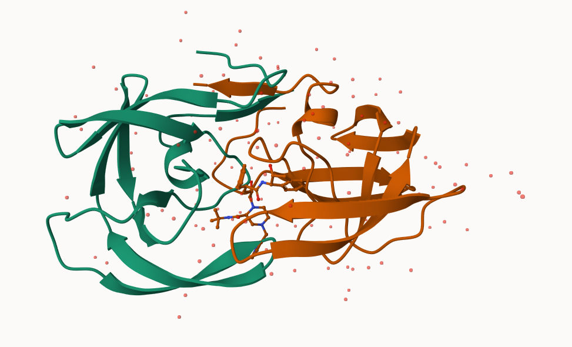
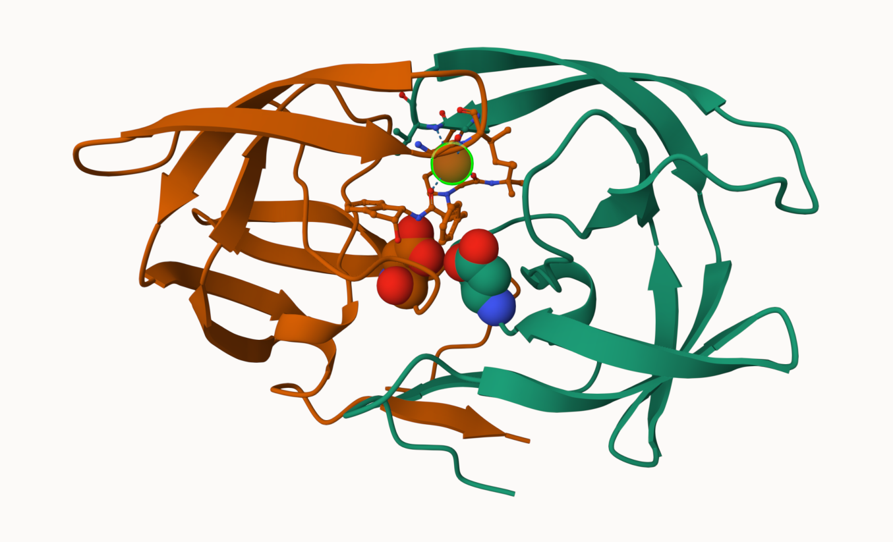

X.ray EM NMR Multiple.methods Neutron Other
Protein (only) 161,663 12,592 12,337 200 74 32
Protein/Oligosaccharide 9,348 2,167 34 8 2 0
Protein/NA 8,404 3,924 286 7 0 0
Nucleic acid (only) 2,758 125 1,477 14 3 1
Other 164 9 33 0 0 0
Oligosaccharide (only) 11 0 6 1 0 4
Total
Protein (only) 186,898
Protein/Oligosaccharide 11,559
Protein/NA 12,621
Nucleic acid (only) 4,378
Other 206
Oligosaccharide (only) 22
Q1: What percentage of structures in the PDB are solved by X-Ray and Electron Microscopy.
# We cannot use: sum(stats$X.ray) since the values under the X.ray column contain commas like "2,758" which means that the numbers are read as characters insteadas.numeric(stats$X.ray)
Warning: NAs introduced by coercion
[1] NA NA NA NA 164 11
Our first step is to get rid of the commas in the dataset. We can use gsub(pattern, replacement, x) which stands for global substitution:
x=stats$X.raysum(as.numeric(gsub(",", "", x)))
[1] 182348
#Here, we replaced every instance of a comma in x with nothing (i.e. deletes the commas)
Now, we can turn this code snippet into a function in order to convert all the data in the table into numbers without commas:
sumcomma =function(x){sum(as.numeric(gsub(",", "", x))) #We can set x to any column in "stats" in order to calculate its total}
sumcomma(stats$Total)
[1] 215684
#sumcomma(stats$Total) gives us the sum of the Total column in stats
To do our calculation column by column, we could do (sumcomma(stats\(X.ray) / sumcomma(stats\)Total)). Instead, we can use “apply” to run this calculation across all columns at once:
apply(stats, 2, sumcomma)
X.ray EM NMR Multiple.methods
182348 18817 14173 230
Neutron Other Total
79 37 215684
Next, we can divide every column by the sum of the Total column, turning every column into a percent:
apply(stats, 2, sumcomma) /sumcomma(stats$Total)
X.ray EM NMR Multiple.methods
0.8454405519 0.0872433746 0.0657118748 0.0010663749
Neutron Other Total
0.0003662766 0.0001715473 1.0000000000
From this, we can see that 84.5% of structures in the PDB are solved by X-Ray and an additional 8.7% are solved by Electron Microscopy ()
Q2: What proportion of structures in the PDB are protein?
Q3: Type HIV in the PDB website search box on the home page and determine how many HIV-1 protease structures are in the current PDB?
(186898/248895733) *100
[1] 0.07509088
Only 7% of the HIV-1 protease sequences we know have structures in the PDB
Visualizing the HIV-1 Protease Structure
Mol* (“mol-star”) viewer is now everywhere.
Q4: Water molecules normally have 3 atoms. Why do we see just one atom per water molecule in this structure?
Our resolution is set to 2 angstroms; in order to see hydrogen, we would need to increase the resolution to 1 angstrom
If we want to insert our image from Mol* into our document, we use the camera icon to take and download a picture, move the image into our project folder for R, and then insert the image name into the syntax below:

In the image below, the 1HSG protein is shown with the two ASP25 residues (one on each homodimer) and the critical central water molecule highlighted

Introduction to Bio3D in R
Comparative Structure Analysis of the Adenylate Kinase